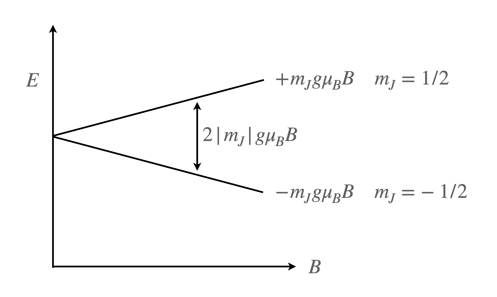
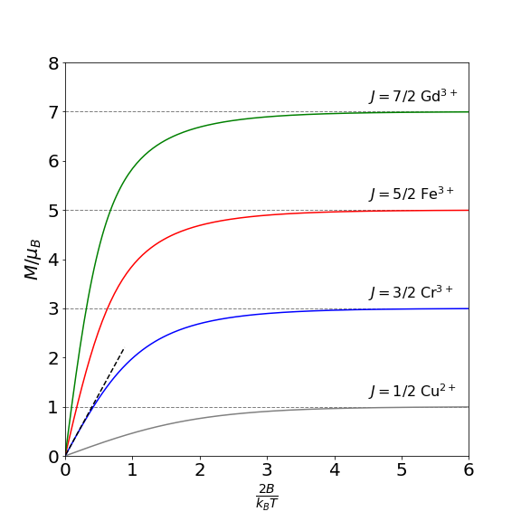
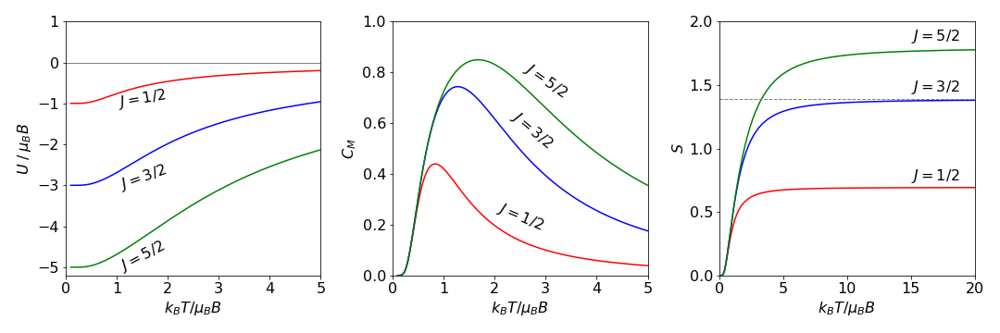

Maclaurin and Taylor series expansions. Paramagnetic spins. Euler-Maclaurin formula.¶
# import all python add-ons etc that will be needed later on
%matplotlib inline
import numpy as np
import matplotlib.pyplot as plt
from sympy import *
init_printing() # allows printing of SymPy results in typeset maths format
plt.rcParams.update({'font.size': 14}) # set font size for plots
6 Maclaurin and Taylor series¶
Many normal functions can be expanded into a series by the method devised by Maclaurin and by Taylor. Series are often used to simplify a function at some value of its argument, for example at small \(x, \sin(x) \approx x\), and this may enable an equation to be solved, as in the case of a pendulum’s motion. The equation of motion is greatly simplified by assuming that the pendulum is restricted to move only to small angles from the vertical.
The other use of a series expansion is to extrapolate from some simple law where dependence may be linear in \(x\), into more realistic conditions by adding terms in \(x^2\) and \(x^3\) and so on. This approach extends our knowledge into unknown regions by using what is presently known about the behaviour of the equations, and assumes that they change only in a predictable and gradual way. This is the approach made when the virial coefficients of a real gas are calculated. The equation has the form
with virial coefficients \(c_0, c_1\) etc. and is clearly seen to be based on the ideal gas law.
6.1 Maclaurin series¶
A power series has the general form
where the coefficients \(a_0, a_1\), etc. are independent of the parameter \(x\). We shall clearly want to be able to find these coefficients and doing this relies on the fact that by differentiating a converging power series the resulting series can be shown also to converge.
The coefficients are calculated by repeatedly differentiating \(f(x)\) and then substituting \(x\) = 0. This will lead to the Maclaurin series. It is implicitly assumed that the function can be differentiated, functions such as \(| x |\) generally have no series as the differential is undetermined at \(x = 0\). If the notation \(f'(x)\) represents the first derivative, \(f′′(x)\) the second, etc., the derivatives of \(f(x)\) are
The coefficients are found by substituting \(x = 0\) into equation (13) and into the derivatives. The first four are
and the \(n^\mathrm{th}\) is \(a_n = f^n(0)/n!\).
By reassembling the parts, the Maclaurin series for \(f(x)\) is produced:
Sometimes the equation is written in the equivalent form;
where the subscript \(0\) means evaluate the derivative at \(x = 0\).
6.2 Taylor Series¶
In the Maclaurin series, the derivative is calculated at \(x = 0\) and the function is described as having been ‘expanded about zero’. However, a function can be expanded about any other value of \(x\), say \(x_0\); this will generate the Taylor series which is the ‘expansion about \(x_0\)’. This series is
or equivalently
where the subscript \(x_0\) means evaluate the derivative at \(x = x_0\): The Taylor series evaluated at zero is the Maclaurin series.
These series are extremely useful, for example, to calculate \(\sin(1.3), \;\cos(\pi/4),\; \ln(1 + x)\), and so forth if the function can be expanded as a Taylor series and the terms added until the required numerical accuracy is needed. This is tedious to do by hand, rather than being difficult, but is ideally suited for computer calculation where repetitive calculations are easily performed.
6.3 \(O(x)\) and \(\sim\) notations¶
In a series expansion of a function \(f(x)\) it is often possible to state something general perhaps that that \(f(x) \to \infty\) as \(x\to \infty\). This is, however, often too general and if a series is to be used only to a finite number of terms we would like to know how quickly the term after the last one used is varying as \(x\) changes; does it change as \(x^2\) or \(e^x\) for example?
The ‘big-O’ notation, for example, \(O(x^2),\; O(e^x)\), and so forth, is used for this purpose and means that the function whose series we are examining grows at a rate \(x^2\) or \(e^x\) at the point that the function is being evaluated. An example is the series \(x^{-2} - x^{-4} + O(x^{-6})\) when \(x \gt 1\) which means that the next term in the series is vastly smaller than the \(x^{-4}\) term and can be safely ignored. The symbol \(\sim \) is generally interpreted as meaning ‘is proportional to’ and as used in \(\sin(x) \sim x\) when \(x \to\) 0 means that the function grows at the same rate as \(x\).
6.4 Useful series expansion formulae¶
Several expansions are listed below. If you want to calculate, for example \(1/(1 - ax)\), replace each \(x\) in the first series below with \(-ax\) and evaluate the result; \((1 - ax)^{-1} = 1 + ax + (ax)^2 + (ax)^3 + \cdots\). This substitution can be performed with any series and means that fewer need to be remembered. The \(O(x^6)\) means that the next term in the series has power of order of \(x^6\). You must check on the value of \(x\) used determine if this is an acceptable approximation.
6.5 Trig functions¶
The Maclaurin series of \(f(x) = \sin(x)\) is equivalent to a Taylor series expanded about zero. By definition the expansion is given by replacing \(f(x)\) in equation \(15\),
The derivatives are
and when \(x = 0\) they follow a repeating pattern with a period of four terms,
where each even power derivative is zero and the odd power derivatives alternate between \(1\) and \(-1\). With this in mind, the expansion for \(\sin(x)\), which must contain only odd powers of \(x\), is
The summation formula on the right was obtained ‘by inspection’, which in practice can involve quite a bit of trial and error to get correct. For example the \((-1)^n\) ensures that terms are negative when \(n\) is odd, \(n\) being the position of a term in the series. The first, \(x\), is at position zero.
The series for \(\cos(x)\) can be found by differentiating the series for \(\sin(x)\) because \(f′(\sin(x)) = \cos(x)\), therefore the series only contains even powers of \(x\) and is,
The series expansion of \(\sin(a + x)\) contains terms in all powers of \(x\),
as does the cosine series
and when \(a = 0 \pm k\pi\), where \(k\) is an integer, this reverts to equation (19) and the sine expansion to (18).
The series can be checked using SymPy as follows;
x, a = symbols('x, a')
f01 = sin(a + x)
s = series(f01,x,n = 5)
s
The graph below shows the Taylor series approximation to \(\sin(x)\) taken up to \(x^{23}\). The dashed curve is the approximation which is almost exact up to about \(x = \pm\)6.
# Forming a Taylor Series using SymPy then plotting results
x ,n = symbols('x, n')
f = sin(x) # victim function
numx = 100 # number of x points
xx = np.linspace(-3*np.pi,3*np.pi,numx)
ff = [0.0 for i in range(numx)]
fig1 = plt.figure(figsize=(6, 5))
plt.rcParams.update({'font.size': 16}) # set font size for plots
cols = ['blue','grey','green','black','orange','red']
for i in range(3,25,4): # number of terms in series, 3, 7, 11...
s = expand( series(f, x, n=i) ) # Algebraic series. series(function, point, order)
for j in range(numx):
ff[j] = s.removeO().evalf( subs={ x:xx[j] }) # evaluate (remove 'big O' notation first)
pass
plt.plot(xx,ff,color=cols[(i-3)//4],linestyle='dashed',label=str(i),linewidth=1)
pass
plt.axhline(0,linewidth=1,color='grey')
plt.plot(xx,np.sin(xx),color='black')
plt.axis([-3.3*np.pi,3.3*np.pi,-2,2])
plt.xlabel('x')
plt.ylabel('functions')
plt.legend(bbox_to_anchor =(1.0, 1.0),fontsize=14)
plt.show()
Figure 3. Taylor expansion of \(\sin(x)\) up to \(x^{23}\) together with the function (black line).
6.6 Exponential expansion¶
The expansion of the exponential is easy to achieve with \(\displaystyle f(x) = e^{ax}\) and \(a\) as a constant. The derivatives are
then, when \(x = 0\), the derivatives can be written as \(f^n(0) = a^n\) and therefore the coefficients in the series are \(a^n/n! \). Substituting using equation (16) produces
This expansion can be shown to be true for any value of \(x\). When the constant \(a\) = 1 the summation is \(\displaystyle \sum\limits_{n=0}^\infty \frac{x^n}{n!}\) which is worth remembering as is the expansion for small \(x\) which is
These approximations are perfectly acceptable provided that \(|ax| \lt 1\), and therefore \((ax)^2 \ll ax\) and so forth. The indication of ‘less than’ means ten times less rather than just slightly less for this approximation to be a good one. You could investigate this for yourself.
6.7 Log expansion¶
Finding the expansion of log functions is also easy, but in this case it is restricted to the limits \(-1 \lt x \le 1\) when \(f(x) = \ln(1 + x)\). Differentiating produces
and so forth and the series when \(x\) = 0, has coefficients
therefore
This series is restricted to the limits \(-1 \lt x \le 1\). To understand why this is, suppose that \(x = -1\), then this would mean calculating \(\ln(0)\), which is \(-\infty\). The series would be \(-1 - 1/2 - 1/3 - 1/4 -\cdots = - (1 + 1/2 + 1/3 + 1/4 + \cdots)\). The series is brackets is the Harmonic series and this diverges, i.e. continuously increases, so the log series expansion is not valid when \(x = -1\).
To check that the harmonic series grows as terms are added, try the calculation. Superficially, it appears that the harmonic series will converge to a finite limit, but the reciprocal \(1/n\) does not decrease fast enough as \(n\) increases to ensure this.
When \(x = 1\), however, the series is \((1 - 1/2 + 1/3 - 1/4 +\cdots)\) which converges therefore \(\ln(2)=1 - 1/2 + 1/3 - 1/4 +\cdots\). This has very slow convergence and many thousands of terms are needed to obtain an accurate result, consequently this is not a very practical way of calculating \(\ln(2)\).
When the value of \(x\) is small and \(x^2 < x\) and higher powers of \(x\) are also less than \(x\) then expansion can be limited to just one term: \(\ln(1 + x) \approx x \).
Interestingly, if the standard integral
is expanded using the series \(1/(1+x)=\sum_{n\ge 0}(-1)^nx^n\) this produces
integrating term by term gives
which is just the expansion for \(\ln(1 + x)\) as it should be.
This series expansion method does give us a way of evaluating integrals numerically. The method is to keep on adding terms to the series until the answer does not vary to within a sufficiently large number of decimal places or the answer is considered accurate enough. An example is given below. There are several well known methods for numerical integration such as the Euler–Maclaurin method or Simpson’s rule and generally, these should be used. Numerical integration is described in Chapter 10 and Euler-Maclaurin in Section 7.
6.8 Binomial expansion \( (1+x)^m\)¶
One of the most general formulas is obtained by expanding \(f (x) = (1 + x)^m\) where \(m\) can be positive, negative, an integer, or a fraction.
Starting with the expansion formula
the first term \(f(0) = 1\), and the function has derivatives
The general series is
After some trial and error this can also be written as,
and is valid only when \(| x | \lt 1\). In common with other expansions when \(x \ll 1\),higher powers of \(x\) are even smaller and the series can be truncated at the second term.
The binomial coefficients are often written as \(\displaystyle \frac{m!}{n!(m-n)!} = \binom{m}{n} \tag{24} \)
This ratio is usually used to describe the number of ways of placing \(n\) objects into one of two bins if there are a total number of \(m\) objects.
Provided that \(| x | \lt 1\) the expansion of \((1 + x)^{1/2}\) is
and similarly
Example, calculate square root¶
Consider calculating \(\sqrt{3/2}\), using equation (25). Letting \(x\) = 1/2 the series is \((1+x)^{1/2}= 1+ 1/4 - 1/32 + 1/128 \cdots = 1.2265\). The correct answer to 4 decimal places is 1.2247 and the series has to be extended to nine terms, the highest power being \(x^8\) to reach this level of accuracy. Trying to calculate \(\sqrt 3\) using this series gives a divergent result; why is this? Try it for yourself. The ancient Algorithm 1.2 could, however, be used.
6.9 Derivatives of series¶
Sometimes it is convenient to obtain a series by taking the derivative of each term in another known series rather than work out the series from scratch; for example, by differentiating term by term
a reciprocal square root series is found. Differentiating the log series gives the result.
Reversing the equation, the summation is \(\sum_n x^n=x+x^2+x^3+x^4+\cdots = 1/(x-1)\) and if differentiated is
6.10 Paramagnetic spins. Example using partition functions, expansions and limits¶
As an illustration of using several of the methods described in this chapter the properties of magnetic ions in a crystal are examined. In a paramagnetic crystal such as chromium potassium alum, \(\mathrm{Cu_2(SO_4)_3}\) in \(\mathrm{K_2(SO_4)24H_2O}\) the paramagnetic Cr\(^{3+}\) ion is surrounded by 1 potassium, 2 sulfur, 20 oxygen and 24 hydrogen atoms, thus the paramagnetic ion is relatively dilute and are positioned so far apart that their unpaired electrons only suffer very weak interactions between one ion and another, rather like the atoms in a dilute gas have. This means (a) that the rest of the crystal can be thought of as an inert container for the magnetic ions and (b) that the standard method of statistical mechanics can be used to determine the magnetic properties since the paramagnetic electrons do not interact with one another. In effect this means that we can determine the partition function and therefore the magnetization , which is the total magnetic moment, and the entropy, internal energy and heat capacity.
If an atom, molecule or ion possesses a resultant magnetic moment and it is sufficiently removed from its neighbours then this is only weakly influenced by them. The number of unpaired electrons \(S\) and orbital angular momentum \(L\) determines the multiplicity of the energy levels which are degenerate in the absence of other interactions. The total angular momentum is \(J=L+S\). If the total spin is \(S\) the spin multiplicity is \(2J+1\). Sometimes the ions such as Cr\(^{3+}\) and Fe\(^{3+}\) can have effectively zero orbital angular momentum this being ‘quenched’ by the fields from neighbouring ions, in this case \(J=S\). If an external (or internal) magnetic field is present the degeneracy is lifted and the levels have quantum numbers \(m_J\) ranging in unit integral values from \(-J,-J+1\cdots J-1,+J\) or \(2J+1\) in total. For example for Cr\(^{3+}, J=3/2\), thus \(m_J\) has \(2(3/2)+1=4\) values in the series \(-3/2,-1/2,1/2,3/2\).
A magnetic field gives rise to states whose energy is \(E= \pm m_Jg\mu_BB\) and \(m_J\) pairs of levels are separated by \(\Delta E=2|m_J|g\mu_BB\) where \(B\) is the magnetic field strength (in Tesla \(T\)) and \(\mu_B=9.27401\cdot 10^{-24} \) J/T is the Bohr magneton. The energy gaps in a \(2\) Tesla field, assuming \(J=1/2\) and Lande splitting factor \(g=2\) (described below) are \(\displaystyle \cdot 9.27401\cdot 10^{-24}\cdot 2/hc \approx 1.9\; \mathrm{{cm}^{-1}} \) whereas thermal energy at 300 K is \(\approx 210\;\mathrm{{cm}^{-1}}\) which means that at all but at very low temperature all levels are approximately evenly populated. To observe any effect, therefore, the temperature has to be extremely low and/or the field very large.
In the crystal there are (obviously) other electric charges from nearby ions and these can also split the energy levels (zero field splitting, Stark effect) but the magnitude is very small, fractions of wavenumbers. This means that the splitting of levels and hence the magnetization is determined virtually completely by any applied magnetic field.

Figure 4a. Energy levels in a magnetic field.
Statistical mechanics shows us that the entropy, internal energy and magnetization are all dependent of knowing the partition function \(Z\). The partition function is given in equation 11 and is
where \(i\) sums over all levels with degeneracy \(g_i\) and energy \(E_i\). In our example \(i\equiv m_j=-J\cdots +J\) and the energy \(E_i\equiv E_{m_J}=-m_Jg\mu_b B\) where \(g=2\) (Lande splitting factor) when \(L=0, L=S\). In general this is given by
The levels split by the magnetic field are no longer degenerate so all \(g_i =1\). For simplicity let \(a=g\mu_BB/k_BT\) then
which is a finite geometric progression with constant factor \(w=e^a\).
The series is \(\displaystyle Z=w^{-J}+w^{-J+1}+\cdots +w^{J-1} + w^{J}\) and multiplying both sides by \((1-w)\) gives
making
The magnetization is defined as \( M=g\mu_B\langle m_J\rangle\) where \(\langle m_J\rangle\) is the average value of \(m_J\). The average of a function \(f(x)\) is defined as \(\sum xf(x)/\sum f(x)\) (see section 3),
therefore
where we have used \(dB/d a=k_BT/g\mu_B\).
Substituting gives \(\displaystyle \ln(Z)= \ln(e^{-aJ} - e^{a(J+1)})-\ln(1-e^a)\) using the definition \(\displaystyle \frac{d \ln(f(x)}{dx}=\frac{f'(x)}{f(x)}\) gives
and the change in magnetization with magnetic field is shown in figure 5a for different values of \(J\).
At large \(a\), effectively at large \(B/T\) the values become constant, and the effect is saturated as the levels are now well separated so that only lower levels are populated. The limit is found from eqn. 25a When \(a\) is large \(e^{aJ} >>1 >> e^{-aJ}\) and the latter can be ignored, therefore

Figure 4b. The calculated magnetization for different spins. The dashed line on the \(J=3/2\) curve is the Curie limiting value.
At low field or high temperature \(B/T\to 0\) the limit also can be found but only with great difficulty with the equations so far discovered. Using L’Hopital’s rule fails because the exponential terms simply repeat themselves, using computer algebra (python/Sympy) does find the solution, but the method by which this is done is completely opaque. However, the limit exists and is called Curie’s equation and is
To obtain this by hand it is necessary to go back a few steps and re-organize the partition function by multiplying top and and bottom by \( e^{-a/2}\), viz,
and in this form we can recognize that the difference in exponential terms is similar to that for sine and cosines but as \(i=\sqrt{-1}\) is missing these are expressions for the hyperbolic function \(\sinh\) function; see chapter 1 section 5.5. \(\displaystyle \sinh(x) = (e^x-e^{-x})/2\). Substituting produces
making \(\displaystyle \ln(Z)= \ln\left(\sinh(\big(2J+1)a/2\big)\right) -\ln\big(\sinh(a/2)\big) \).
Differentiating is similar to that for the \(\sin\) function, \(d\sinh(x)/dx = \cosh(x)\) thus remembering to multiply by \(dB/da\),
This can be simplified a little more by using \(\coth(x)=\cosh(x)/\sinh(x)\) or
where the function in brackets is called the Brillouin function after L. Brillouin who extended to classical theory of Langevin to include quantum ideas.
The expansion of \(\coth(x)\) for small \(x\) is \(\displaystyle \coth(x)=\frac{1}{x}+\frac{x}{3}\) when \(x\ll 1\). The high temperature, low field limit is therefore,
The form of this equation is as anticipated on physical grounds because when a sample is placed into a magnetic field the magnetic dipoles tend to align, and do so more as the field \(B\) is increased, but thermal motion tends to disrupt this alignment, and so the magnetization is in inverse proportion to temperature and in direct proportion to field.
This equation only applies when the magnitude of \(\displaystyle a=2\mu_B B/(k_BT)\) is much less that unity. The ratio \(2\mu_B/k_B \approx 1\) so that this result is only valid if \(B/T \ll 1\). The Curie function is plotted in figure 5b as the dashed line where \(J=3/2\). These results, both the Brilluoin and Curie equations very closely match the experimentally measured magnetization for many paramagnetic salts.
The susceptibility \(\chi\) or degree of magnetization can be measured, for example by using a Gouy balance, and for low fields
which has the form of Curie’s law \(\chi = C_c/T\) where the constant is \(C_c=\mu_0g^2J(J+1)/3k_B\) and where \(\mu_0\) is the permeability of vacuum (\(4\pi\cdot 10^{-7}\) H/m) and \(\mu_{eff}\) the effective magnetic moment. This is therefore \(\mu_{eff}=g\mu_B\sqrt{J(J+1)}\).
The internal energy, heat capacity and entropy can also be calculated using the partition function. The internal energy per molecule in the presence of a magnetic field is
and the entropy
These are shown in figure 5c.

Figure 4c. The energy, \(U\), (Left) heat capacity \(C_M\) (centre) and entropy \(S\) (right) for the isolated spin system with different \(J\) values. The horizontal dashed line in the entropy plot is the limiting value \(k_B\ln(2J+1)\)
The shape of the plots of the thermodynamic quantities, energy, heat capacity and entropy are understood by considering what happens to the population of the levels as energy is added. At low energy only the lowest \(-m_J\) level will be populated and limiting values result. Here, the energy is \(-Jg\mu_BB\) which is \(-5\mu_BB\) when \( J=5/2\) the energy is given by
and as \(T\to 0\) then \(\displaystyle U \to -g\mu_B B J\) because \(\coth(\infty)\to 1\). As the temperature increases, or more properly \(T/B\) increases, the energy increases and reaches a maximum value because when the population of each level is equal no more energy can be added. The maximum value is zero because the initial energy is zero and levels rise and fall symmetrically (figure 4a) so must also be zero when all levels are equally populated.
The heat capacity is the slope of the energy vs. temperature, so is zero when \(T\to 0\) and when \(T\to \infty\) and because heat capacity is always a positive quantity this must pass through a maximum at at some intermediate temperature. This is called the Schottky Anomaly, although no longer considered anomalous, as it is due to there being a finite number of different levels, i.e. \(2J+1\). Initially \(C_m=0\) as the temperature is low enough to populate only the lowest level. At very high temperatures all levels are equally populated so no more energy can be added and so \(C_M\to 0\). The entropy is initially zero as only one level is populated and as \(S=k\ln(\omega)\) where \(\omega\) is the number of arrangements of particles among energy levels. As there is only one arrangement when \(T\to 0\) the entropy is zero. At high temperature, all levels are equally filled and so the entropy becomes constant. The maximum value is \(k\ln(2J+1)\)which is shown as the dashed horizontal line in fig 4c.
7 The Euler - Maclaurin formula¶
Sometimes a series cannot be expanded to simple formulae but its integral can be evaluated. If the terms in a series can each be differentiated, the Euler-Maclaurin formula, first developed in 1732-3, connects the summation of a series with its integral and provides a series of correction terms to make one the same as the other.
A common form of the Euler-Maclaurin equation puts the summation on the left-hand side starting at \(k\) = 1 and going to \(n\) - 1, which is an integer. On the right-hand side, the integral starts at zero and runs to \(n\) and the other terms are each evaluated at zero and \(n\),
The odd numbered derivatives of the function are indicated by the superscript dash or numbers. The lower limit on the integral can be \(1\) rather than \(0\), and then the function and its derivatives are evaluated at \(1\). The numerical coefficients and derivatives are given more generally by
where \(B_{2k}\) are the Bernoulli numbers (See Abramowicz & Stegun, 1965) some of which are \(B_0 = 1, \,B_1 = -1/2,\, B_2 = 1/6,\, B_4 = 1/42, \,B_8 = -1/30 \). The missing odd indexed numbered values are each zero. The general form of the Euler-Maclaurin equation, where the function is evaluated from \(x = a\) to \(b\), is
where \(m\) is an integer and \(h\) the element \(h = (b - a)/m\) and the summation goes from \(f(a) \to f(b)\) in \(m\) steps. The summation to infinity has only as many terms as necessary to obtain a convergence to the required number of decimal places. There is an error term associated with the summation in this form or that given in equation (27), but this is complicated to evaluate and is not given. It is not necessary to calculate it, however, because using the computer the results can be listed until sufficient precision is reached.
To obtain equation (27) from the general equation the substitutions \(n = m + 1\), and \(b = n\) and \(a = h = 1\) are used. The summation containing the Bernoulli numbers is usually limited to just a few terms because this eventually diverges becoming very large at large \(k\), but converges for smaller \(k\). It seems rather strange that it can be used when it has this property but it does give accurate results when just a few terms are used.
(i) The series for \(k^2\)¶
As only the first derivative is not zero the series is short,
and this result is the same as the series summation for \(k^2\) as may be confirmed using sympy.
(ii) series for \(\ln(k)\)¶
The series for \(\ln(k)\) is
where the integral is \(\int \ln(x)dx = x \ln(x) - x\). Evaluating the series directly and with the Euler-Maclaurin formula produces similar results; the direct summation has a value of \(148.4778\) if \(n = 50\), and \(148.4772\) if the Euler-Maclaurin formula is used, which is a very close match. You have little hope of evaluating fifty terms in the series expansion with your calculator but could manage the Euler-Maclaurin calculation. Notice the similarity of this result to that of the Stirling formula for \(\ln(n!)\), (Chapter 1).
# Euler Maclaurin eqn. 27
#for k in range(1,8):
# print('{:s}{:d}{:s}{:s}'.format('2k = ',2*k,' B/factrl ', str(bernoulli(2*k)/factorial(2*k))))
k, x = symbols('k, x') # use sympy
m = 1
n = 50 # let constant h =1
f = ln(x) # victim function
s1 = integrate(f,(x,m,n)) # symbolically integrate then subs for series
s2 = (f.subs({x:m}) + f.subs({x:n}))/2.0
s3 = 0.0
for i in range(5):
k = i+1
s3 = s3 + (bernoulli(2*k)/factorial(2*k))*diff(f,x,2*k-1) # SymPy 'knows' Bernoilli
pass
s3n = s3.subs({x:n})
s3m = s3.subs({x:m})
s = (s1 + s2 + s3n - s3m).evalf()
print('{:s}{:s}{:s}{:16.10g}'.format('Euler Maclaurin eqn. sum ' , str(f),' = ',s))
sm = sum( [ np.log(i) for i in range(1,n+1)] ) # evaluate 50 terms by direct summation
print('{:s}{:16.10g}'.format('Direct sum = ',sm))
Euler Maclaurin eqn. sum log(x) = 148.4772327
Direct sum = 148.477767